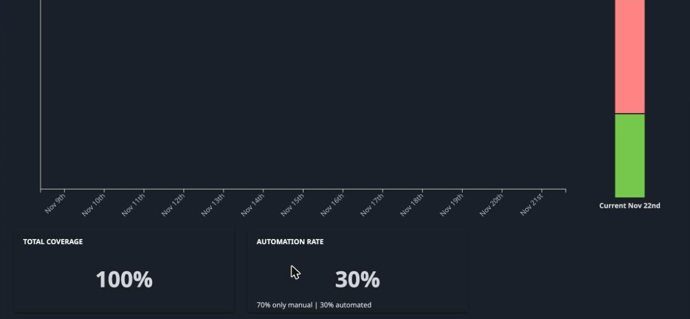
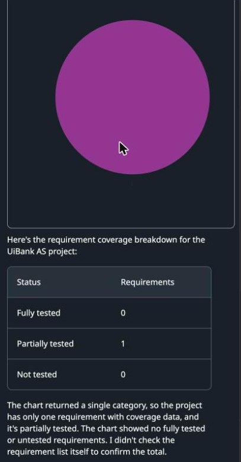
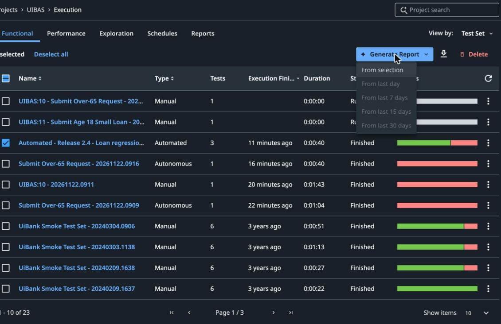
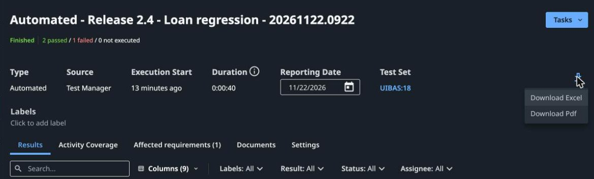

8. Read the Results¶
Why it matters for you: a release manager doesn't read test logs. They want coverage, a trend and a short list of what broke. This step turns today's runs into that evidence, and saves the execution PDF you'll attach in step 9.
You ran the over-65 test case three ways and the regression set once. Now read the results the way a QA (Quality Assurance) manager does: first the big picture, then the requirement, then the failures.
Read the Dashboard¶
- In your project, open Dashboard.
-
Look at Results Overview. You can switch between Daily and Weekly, nothing else.
Where is the imported history?
The 17 executions you imported in step 1 are about 3 years old, and the Dashboard only shows recent weeks. It has no custom date range, so the imported results never appear. The chart starts with today's runs: your manual run, the Delegate run, the autonomous run and the regression set.
-
Read the two tiles:
✅ TOTAL COVERAGE – the share of requirements that have at least one test case. Your project has one requirement with test cases, so it shows 100%.
✅ AUTOMATION RATE – how many of your test cases are automated and how many are manual. Only the 3 you linked in step 6 are automated, so most of the project is still manual – for example "70% only manual | 30% automated".
100% coverage doesn't mean ready
TOTAL COVERAGE counts test cases that exist, not test cases that passed. Your requirement is 100% covered, yet one of its acceptance criteria fails. Never report coverage as readiness.

For your admin: more reporting
Two things you won't see today. The Open Defects tile appears only when the project is connected to a defect tracker such as Jira. Trend dashboards across projects need the Insights service. See Dashboard reports.
Check the requirement¶
A release is approved requirement by requirement, so look at the results from that angle too.
- Open Requirements → Submit Loan Request.
- Open the Test Cases tab. These are the test cases that prove this requirement.
- Find Submit Over-65 Request. It belongs here, because it tests the over-65 acceptance criterion.
Submit Over-65 Request isn't in the list?
Then the requirement doesn't know about its failure, and neither do the charts and reports below. On the requirement page, select Assign test case, and add Submit Over-65 Request.
Ask Autopilot chat for charts¶
Autopilot chat can draw a chart or a table from your project in a few seconds. Open your project, click Autopilot (the sparkle icon, top right) and keep the mode on Edit.
It's your turn now!
Send these three prompts, one at a time. Wait for each answer before you send the next one.
-
Coverage chart
How many requirements are fully, partially, or not tested?Chat uses its Autopilot Chart tool: a pie chart and a table – Fully tested 0, Partially tested 1, Not tested 0. Your one requirement, Submit Loan Request, is Partially tested: the test cases you generated in step 3 are linked, but most haven't run yet. It's a built-in tool, so there's nothing to approve, and it takes under a minute. Read what chat adds under the chart: "tested" means the linked test cases ran, not that every scenario is covered.
-
Failures by requirement
Show a chart of failed test cases grouped by requirement.Keep the word chart in the prompt. Without it, chat searches and gives you a list instead. Chat draws a bar chart and a table with the count of failed test cases per requirement: Submit Loan Request with 1 failed test case. There's nothing to approve. The chart doesn't name the test case: click the suggestion under the answer, Show the failed test case for your requirement key, to see that it's Submit Over-65 Request.
-
Your regression set as a table
List the test cases in Release 2.4 - Loan regression in a table with their labels and their result in the latest execution of that set.Chat reads the test set, the test cases, the execution, the logs and the labels of each test case, so in Edit mode you select Accept about 7 times. It takes about 1–2 minutes. You should get 3 rows, each with the label release-2.4: Submit Standard Loan Request and Submit Underage Request Passed, Submit Over-65 Request Failed, and a summary: 2 passed, 1 failed, 0 not run.

Check the AI's numbers
Chat can miscount. Before you put a number in front of a release manager, compare it with Execution. The footer of the chat says it too: "Autopilot can make mistakes. Please double check the responses."
Generate the Execution Insights report¶
Execution Insights is an Autopilot report on why tests fail: the top failing tests, common errors and recommendations. You start it with a button, not in chat. With the standard tools, chat can't create this report, and a dedicated Autopilot button doesn't use your AI usage pool (Autopilot usage pool for testing).
- Open Execution → Functional.
- Tick the checkbox of your regression execution, Automated - Release 2.4 - Loan regression - …
-
Select Generate Report ▾ → From selection.
No row ticked? From last day works too: it picks up everything you ran today. Don't use the longer periods to reach the imported history – it's too old to be included.
-
You see "Report generation is in progress", and the page switches to the Reports tab by itself, with the status Processing. The report is usually ready in under a minute. No report after 2–3 minutes? Ask your trainer for the reference Insights report and carry on.
-
Open the report and read its sections: Overview, Top Failing Tests, Common Errors, Error Patterns and Recommendations.
Under Common Errors you should read something like "The application for an applicant over 65 was accepted instead of rejected…".
-
Select the download icon (tooltip Download). You get a
.docxfile with a long, random-looking name. Rename it, for exampleUiBank-Execution-Insights.docx, and share it with the developers – it's triage input, not release evidence.

Insights is for triage, not for the release decision
The report explains failure patterns. It doesn't tell you whether to ship. Its Recommendations are written for developers (unit tests, logging, and so on): pass them on, but don't treat them as your verdict. See Test result analysis.
Download the execution PDF¶
The execution PDF is the plain, factual record of the run: no AI, just results. It's the evidence you attach to a sign-off.
- In Execution → Functional, open your regression execution, Automated - Release 2.4 - Loan regression - …
-
On the execution page, select the download icon → Download Pdf.
Use the icon on the execution page. The icon on the Execution list exports every execution to Excel.
-
Save the file (
<PREFIX>-TestResults-<date>_<time>.pdf, with your project prefix) next to your Insights report.
Open it and check:
✅ Summary: 2 Passed / 1 Failed / 0 None
✅ Assertions – Submit Over-65 Request failed its check: UiBank showed "Congrats!" where the test expected "Sorry"
✅ Requirements – Submit Loan Request with its test cases and their results

Check it¶
Check it
✅ Chat's failures chart shows 1 failed test case under Submit Loan Request, and the suggestion names it: Submit Over-65 Request.
✅ The Execution Insights .docx and the execution PDF are saved on your computer.
✅ You can explain in one sentence why 100% coverage doesn't mean ready, and why Execution Insights is triage, not a release summary.
Think about it
Which of today's numbers would you show a release manager, and which would you keep for the test team? Which one could mislead them if you showed it alone?
Nice work!¶
You read the results from three angles – Dashboard, requirement and failures – checked the AI's numbers, and saved the evidence for the decision.